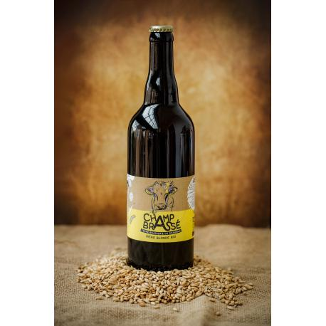
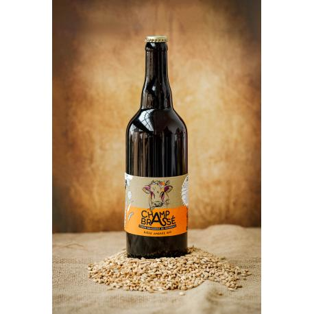

Champ Brassé blonde
Bière blonde bio · 5,1°Bière blonde et douce, brassée avec les céréales cultivées sur notre ferme.
6,30 € la bouteille de 75 cl
37,00 € le carton de 6
À conserver debout, à déguster fraîche. Bouteilles de 75 cl consignées, reprises 0,50 €. Contient du gluten. L'abus d'alcool est dangereux pour la santé, à consommer avec modération.